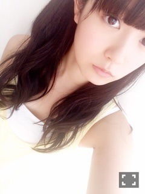

| 2015/07 29 Wed | ひめたん-0o0-その561 |
前回のNOGIBINGO!5
勝手に国民的妹コンテスト
観てくれたかな～？
ひめは玲香が妹にしたいと
言ってくれました(´｡•ω•｡`)
あの収録以降、玲香に会うたび
「おねーちゃん♡」って呼んでる。
いい匂いってのは実はよく言ってくれる(笑)
実はメンバーアンケートで
妹にしたいランキング1位だったって
聞きました♡ひゃー♡
私みたいな妹いたら絶対楽しいよー？
マッサージもするし、ご所望なら
罵倒だってしちゃうし最後はデレるよ？
......完全におかしい。
玲香の妹に求める理想像はおかしいよ。
おねーちゃんからのお願いとはいえ
キツイこと言っちゃってごめんね♡
全部演技だからね♡

ちなみに、
セーラー服を着ていたのは玲香の構想から。
玲香の妹になりたい女の子ちゃんは
セーラー服着て握手会とか行くと
喜んでくれるかもですよ( ˇωˇ )～♪
さらにNOGIROOMにも出てます！
中田、能條、相楽、鈴木、渡辺、中元
なかなか面白い組み合わせ。
パジャマだよ(´,,•ω•,,｀)

次回のらじらー！サンデー
MCひめたんを助けてくれるメール募集中。
今週のメールテーマは
「日芽香の部屋」
「うちの兄弟姉妹...ここがウザい！」
それぞれの投稿フォームから
送ってください( ˇωˇ )～♪
詳しい説明は番組のホームページまで。
http://www.nhk.or.jp/radirer/
らじらー式恋愛参考書
目指せ！カープ女子
ふつおた、リクエストソングも待ってます☆
MC緊張するよーー(´,,•ω•,,｀)
応援しててね。聞いててね。
握手会帰りかもしれないけど
ちゃんと最後まで聞かなきゃだめだよ？
名古屋全国握手会のペアが決まりました！
第19レーン 中元日芽香×能條愛未
え ٩( 'ω' )و
絶対楽しいじゃん ٩( 'ω' )و
乃木團の話とかペアPVの話とか
いろいろ共通点の多いふたりなので
私は今から楽しみです！！
あみあみ族のみなさま
よろしくお願いします♪

あみちゃんみたいなおねーちゃんほしい
ライブも個握も楽しみにしててね！
浴衣着る予定です( ˇωˇ )
この前と違うの！
最後に告知。
7/31 UPDATE girls
記念すべき創刊号。まいまい表紙が目印。
乃木坂のメンバーの個人の活動に
スポットを当てていただいてます！
よろしくお願いします☆

 ひめたん！浴衣を新調するなんて
ひめたん！浴衣を新調するなんて
宝くじでも当たった！？笑笑
つまんねーこと聞くなよ！
ひめは学生の頃の夏休みの思い出、
乃木坂46での思い出経験してますよね、
それぞれ
印象に残っている事ありますか？
学生の頃か～学生の頃は
朝昼スクール、夜塾みたいな
忙しい学生をしてましたよ(・∀・)
乃木坂の夏はツアーですね。
なんか面白くなくてごめん......
ひめたんが広島のお好み焼きで
1番好きなトッピング（具？）はなに？
チーズ！お餅とチーズは美味しいよ～♪
ビックリなリアクションあったけど、
ひめたんはゾンビ系とか大丈夫なの？
得意じゃないのよ全然。
「ケーキ食べていいよ」って言われたから
そーっと開けたら未央ちゃんいたんだもん
そりゃもちろんびっくりしたさ
でもあんまびっくりしてなさそうだったね。
ひめたん落雁と和三盆の違いって分かる?
んー漢字読めない＼(^o^)／
ぴゃぴゃぴゃ～

ヤングアニマル～♪
握手会の感想コメントにたくさん
ありがとうございます♡
京都は4月ぶりだったんたね
らじらーの初回の日
終わってからトンボ帰りしたの懐かしいな～
しかも台湾の荷物を持って。笑
だからお久しぶりの人が多くて
会えてお話できて嬉しかったです（＾ω＾）
またすぐ行くからね。城ホール！！
(＊´・ω・＊)
コメント(979)
2015/07/29 23:42